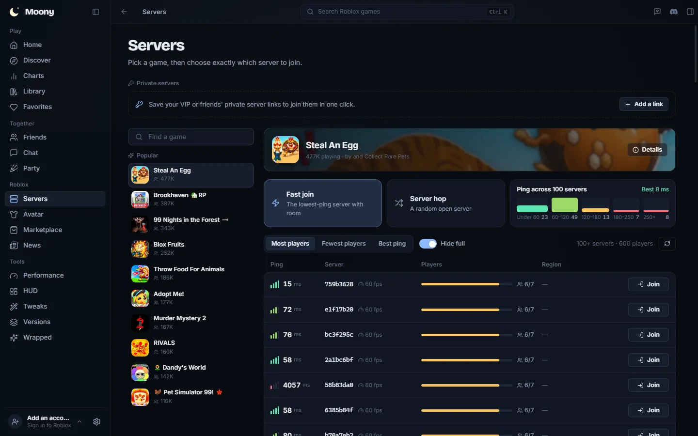
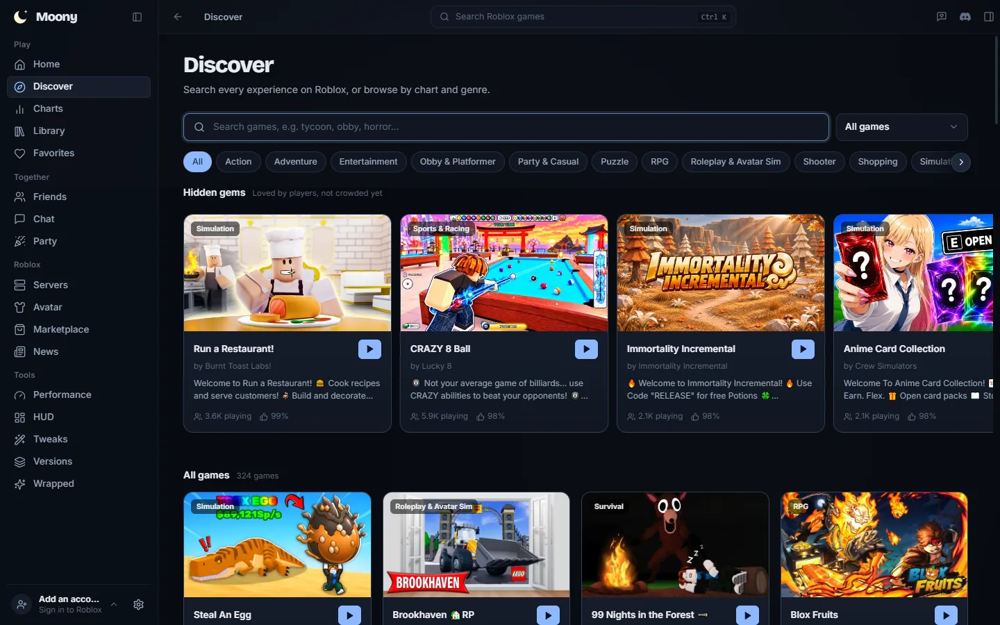
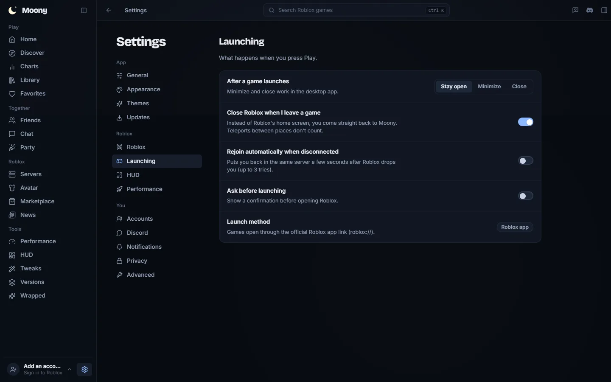

Roblox, launched your way.
Moony is a free Roblox launcher for Windows. Pick the server you join, follow friends into games, boost performance while you play, and play on a launcher that stays out of your way.

Built around the moment you press Play.
Most launchers stop at opening Roblox. Moony helps with what comes right before and right after.
Choose the server, not the queue.
Moony lists every open server with its ping and how full it is, so you can see where the good games are before you join.
- Fast join picks the lowest-ping server with room
- Server hop moves you somewhere new in one click
- Look up which city a server is in
- Rejoin the same server automatically if you drop

Play with friends without the back-and-forth.
Party mode follows a friend into every server they join. Your Discord profile can show the game you're in with a Join my server button, and Moony tells you when friends come online.
- Follow a party leader across servers
- Join any friend's game from Moony
- Message friends without opening Roblox

Smoother games with one switch.
Boost mode gives Roblox high CPU priority and the High performance power plan while you play, then puts everything back. Moony records ping, CPU and RAM for every session so you can see what changed.
- Boost mode, automatic per game
- Session graphs for ping, CPU and RAM
- An in-game HUD and custom crosshair

One look, your backdrop.
Moony has one carefully tuned dark interface. Put any picture, GIF or video behind it, and scale the whole app up or down to fit your screen.
Everything else Moony does.
Play
- A home screen that starts with your game
- Your last game sits at the top with Play and Pick a server, next to your account, friends, Boost and Discord status.
- Discover and Charts
- Search all of Roblox, browse by genre, and see live rankings for most played, trending and up-and-coming games.
- Library and Favorites
- Every game you've played with your hours, plus the games you've saved.
- Playtime
- Moony tracks how long you play each game, even when you didn't launch it from Moony.
Servers
- Fast join
- Joins the lowest-ping server that still has room, in one click.
- Server hop
- Moves you to a different open server, never the one you're already in.
- Ping at a glance
- Signal bars and ping for every server, plus a chart of how ping is spread across all of them.
- Region lookup and private servers
- See which city a server is in, and save VIP or friends' private server links.
Together
- Party mode
- Pick a leader and Moony follows them into every server they join or hop to.
- Friends and chat
- See who's online and what they're playing, join them, and message them from Moony.
- Discord status
- Show the game you're playing on your Discord profile, with a Join my server button for friends.
- Notifications
- A Windows notification when a friend comes online or joins a game you can join.
Tools
- Boost mode
- While you play, Roblox gets high CPU priority and Windows switches to the High performance power plan. Both go back when you leave.
- Performance
- Ping, CPU and RAM recorded for every session, so you can see where lag came from.
- In-game HUD
- An overlay with widgets like session time, ping, server region, PC usage and a music visualiser, plus a custom crosshair.
- Tweaks and versions
- Mods and engine settings (FFlags) for the Roblox player, and a choice of which Roblox version to run.
Open source, and easy to check.
Every line of Moony is public on GitHub. You sign in on Roblox's own page, so Moony never sees your password, and your login is encrypted on your PC.
- Latest version
- 3.0.1
- Installer SHA-256
- Loading…
- Scan it yourself
- Open the VirusTotal report
- Your data
- Settings, favorites and playtime stay on your PC. No ads, no analytics. Privacy
Make Roblox yours.
Free for Windows 10 and 11. Setup installs everything Moony needs.